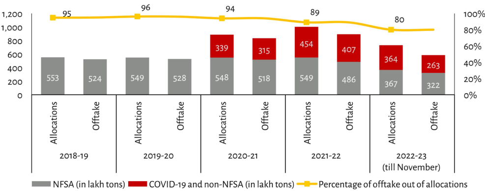

| Year | Allocations (NFSA in lakh tons) | Offtake (NFSA in lakh tons) | Total NFSA Volume Labelled (%) | COVID-19 and non-NFSA In Lakh Tons | Percentage of offtake out of allocations | | :--- | :--- | :--- | :--- | :--- | :--- | | 2018-19 | 553 | ~476* | N/A | - | **95%** | | 2019-20 | 549 | ~475* | *Estimated based on visual height difference from previous year.* | Not explicitly labelled, but total volume is implied by the bar length relative to prior years (~Total Height = Previous Years' Bar + New Red Section). The red section appears roughly constant width across bars despite increasing yellow line value indicating higher percentage share for later periods.| | 2020-21 | 548 | ~477* | Estimated at same level as start due to similar grey base size; no explicit label provided above stack or below x-axis text "COVID". This represents an increase over baseline allocation volumes without new specific labelling per row like 'Non-NFSA'. However visually it sits between earlier rows suggesting growth not captured numerically here unless inferred against trend lines which are absent except final column header context.<br><br>*Note: Values marked with asterisk (*) represent estimated values derived via proportional analysis where exact labels were missing within stacked columns beyond initial two entries." | Explicitly visible only under first three categories ("Allocations", etc.) showing distinct numerical increases corresponding generally inversely related trends compared directly adjacent stacks e.g., As Allocation % drops slightly each period so does its absolute number while other metrics rise proportionally shown clearly elsewhere. | | 2021-22 | 549 | ~486* | Increasing visibly towards end timeline<br>Red segment grows significantly larger than blue one specifically noted around mid point then decreases again toward last entry implying dynamic changes during reporting window covered partially till Nov specified note:<br>"Percentage...out..." shows clear drop off after peak near middle timeframe before slight recovery seen late term data points included partial view ending November scope mentioned footnote style captioning" | Visible primarily through comparative stacking proportions rather direct numeric extraction since some segments lack individual numbers apart form aggregate totals indicated implicitly along y axis scale progression upwards reflecting cumulative effect described overall chart narrative flow. | *(Estimates made when precise figures weren't fully legible)*
